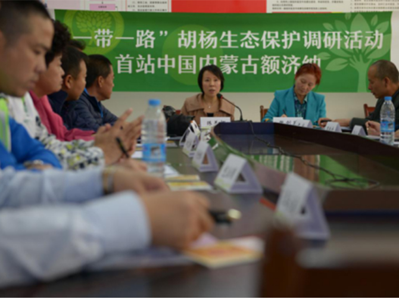
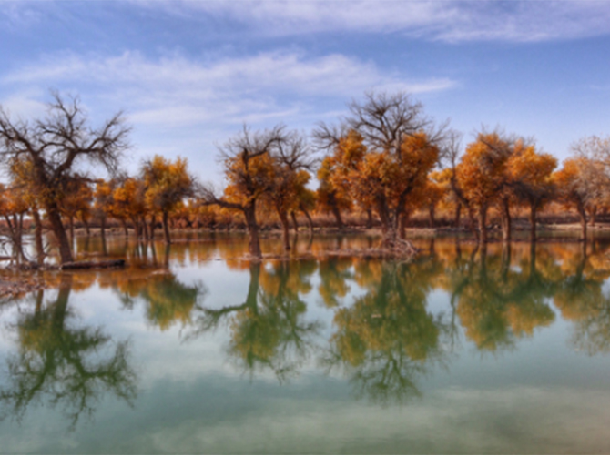

扫一扫
微信关注
极客联盟
扫一扫
微信关注
极客联盟
9月17-20日，由中国绿化基金会主办的绿色公民行动“我有一片胡杨林”生态保护调研活动在内蒙古自治区阿拉善盟额济纳旗举行。此次调研活动由企业代表、媒体、专家、知名自媒体人以及社会爱心人士共计13人组成，调研团在活动期间开展了座谈、采访、巡查等多项活动，就“我有一片胡杨林”项目爱心善款的落实、胡杨林造林地建设、胡杨树繁育、种植、养护以及如何向大众传播胡杨林的生存现状和保护等问题进行实地调研，并共同探讨可持续荒漠治理的有效途径。
中国绿化基金会绿色公民行动“我有一片胡杨林”项目，自2016年8月正式开通网络募捐至今，收到4500多位爱心人士的善款十二万余元，已经在内蒙古自治区额济纳旗种植胡杨2000棵，同时开展胡杨养护工作，致力于填补额济纳旗胡杨生态保护建设的不足。

调研期间，调研团来到位于额济纳旗胡杨林景区内的国营经营林场的胡杨苗圃基地，对“我有一片胡杨林”项目地进行实地考察和胡杨挂牌活动。调研团在现场了解到胡杨苗的浇水、病虫害防治、巡视养护和移植造林等日常管理内容，并将刻有捐赠人名字和寄语的“铭牌”挂到新生的胡杨苗上，见证捐赠人的爱心投入转换为生机盎然的苗木。
